Sicurezza
La funzionalità di sicurezza di Movincloud mostra le vulnerabilità degli asset di inventario presenti su Movincloud.
Per accedere alla funzionalità “Sicurezza”, cliccare sul pulsante bento in alto a sinistra. Dopo averlo fatto, apparirà la barra del menu, dove occorre cliccare su “Sicurezza”.

Dashboard Generale
A questo punto, l’utente si trova nella pagina tab “Dashboard” dove vengono mostrati in modo aggregato i dati di sicurezza delle risorse per tutti i provider configurati.
In alto è presente una barra dei filtri che consente di filtrare i risultati per sottosistema, stato e/o nome policy.
Successivamente, l’utente nota la presenza del grafico a barre che indica lo stato di compliance delle risorse assegnate alle policy, suddivise per sottosistema.
Passando il mouse su una sezione del grafico, si può notare che i valori visualizzati nella pagina si aggiornano per mostrare un’anteprima del dettaglio.
È possibile cliccare su una sezione del grafico per applicare automaticamente i filtri “sottosistema” e “stato” alla pagina.
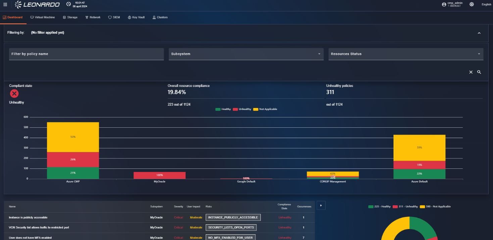
Scorrendo la pagina verso il basso, è presente la tabella delle policy che verrà automaticamente filtrata in base ai filtri selezionati.

Cliccando su una riga della tabella si aprirà una finestra di dettaglio dove è possibile trovare tutte le informazioni relative alla policy selezionata, e sarà disponibile anche la lista delle risorse coinvolte. È possibile cliccare sul nome di una macchina per visualizzarne i dettagli; in tal caso, l’utente verrà reindirizzato alla risorsa di inventario Movincloud in modalità “visualizzazione”.

Per uscire dal dettaglio, occorre cliccare fuori dalla finestra, che si chiuderà automaticamente.
Dashboard specifiche per tipologia di risorsa
È possibile filtrare ulteriormente le policy per tipologia di risorsa, utilizzando le tab in alto nella pagina.
Una volta selezionata la tipologia di risorsa, è possibile navigare le pagine seguendo le modalità descritte nel paragrafo precedente.

Dashboard SIEM
Per visualizzare la dashboard SIEM, cliccare sulla tab che raffigura uno scudo. In alto è presente un menu a tendina dove è possibile selezionare la sottoscrizione di interesse, mentre accanto c’è un menu a tendina dove è possibile selezionare un intervallo temporale.
Sotto, è presente la sezione “Summary” che contiene informazioni, tra cui ad esempio “Alerts” che indica il numero di alert. Sempre all’interno della sezione “Summary” è presente il grafico “Incidents by status” che indica gli incidenti per stato.
Sotto la sezione “Summary”, è presente la sezione “Hourly Events Grouped By Type” che contiene un grafico a istogramma che indica gli eventi orari per tipologia.
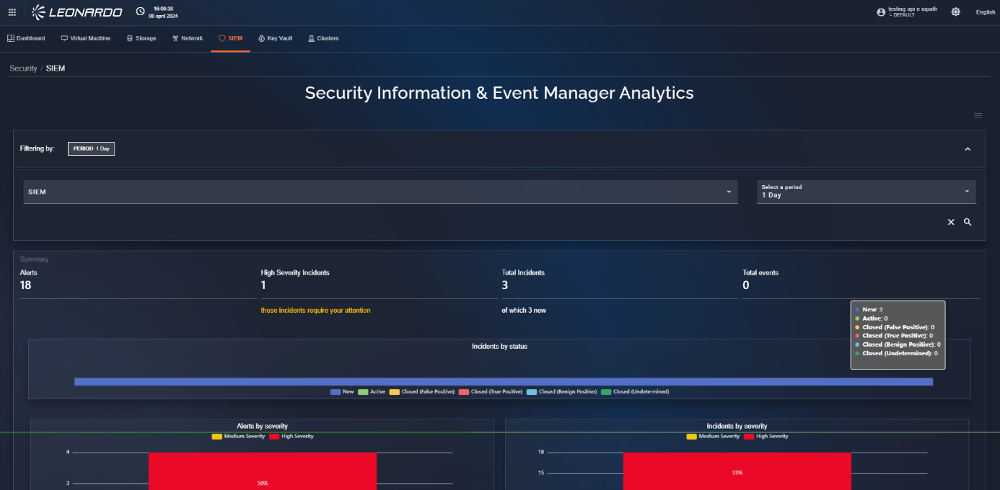
Scorrendo la dashboard SIEM, è presente il grafico “Event types” che indica tutte le tipologie di evento.
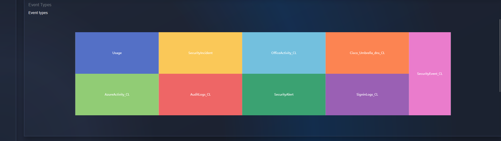
Infine, in fondo alla pagina, sono presenti due tabelle: a sinistra la tabella “Alert rules” che mostra un insieme di regole di allarme, mentre a destra la tabella “Incidents” che mostra gli incidenti.
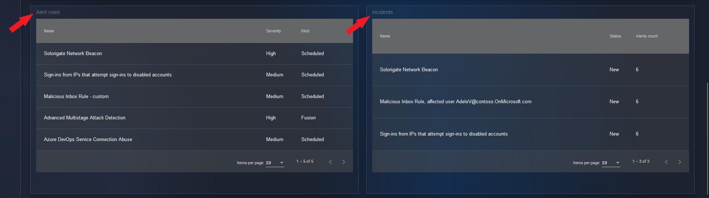
Cliccando su una riga della tabella si aprirà una finestra di dettaglio, dove è possibile trovare tutte le informazioni relative alla regola o all’incidente selezionato.
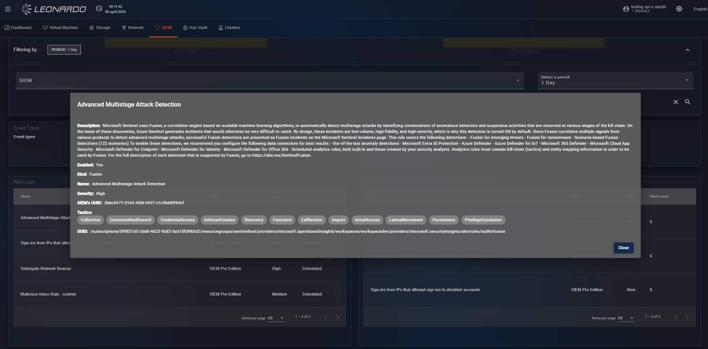
Dashboard Secret Manager
Per visualizzare la dashboard SIEM, cliccare sulla tab che raffigura una chiave. In alto è presente un menu a tendina dove è possibile selezionare la sottoscrizione di interesse.

In fondo alla pagina sono visibili i pulsanti di navigazione della tabella e una tabella.
A seconda della pagina selezionata, la tabella mostrerà rispettivamente:
- Secret
- Keys
- Certificates
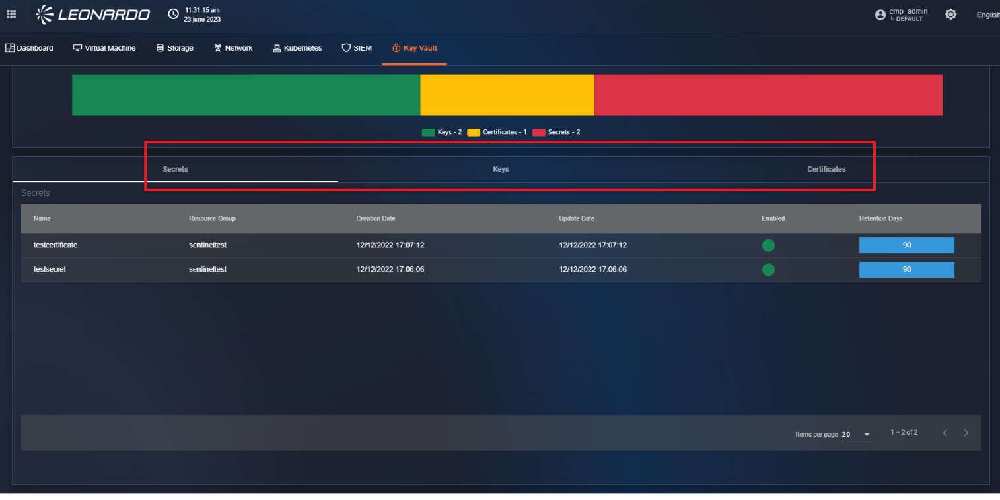
Cliccando su una riga della tabella è possibile visualizzare il dettaglio della risorsa selezionata.
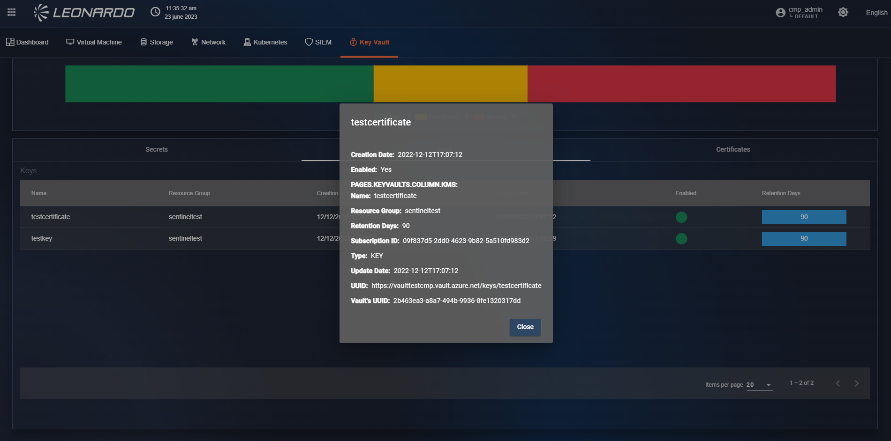
Dashboard Clusters
A questo punto, l’utente si trova nella pagina tab “Dashboard” dove vengono mostrate in modo aggregato tutte le alert generate dai sottosistemi di tipo “Cluster” configurati in Movincloud.
In alto è presente una barra dei filtri che consente di filtrare i risultati per namespace, sottoscrizione e/o nome policy.
Successivamente, l’utente nota la presenza del grafico a barre che indica il numero totale di “alert” ricevute, suddivise per sottosistema.
Passando il mouse su una sezione del grafico, si può notare che i valori visualizzati nella pagina si aggiornano per mostrare un’anteprima del dettaglio.
È possibile cliccare su una sezione del grafico per applicare automaticamente il filtro “sottosistema”.
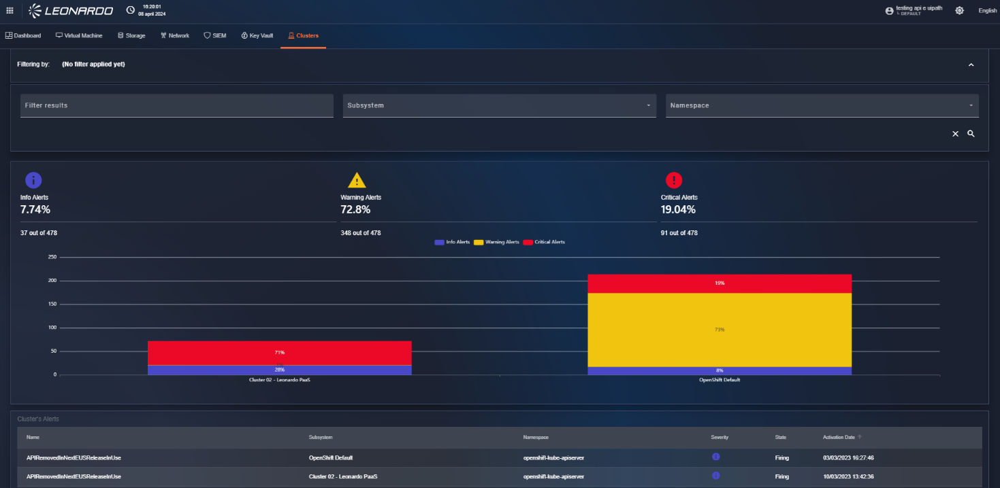
Scorrendo la pagina verso il basso, è presente la tabella “alerts” che verrà automaticamente filtrata in base ai filtri selezionati.
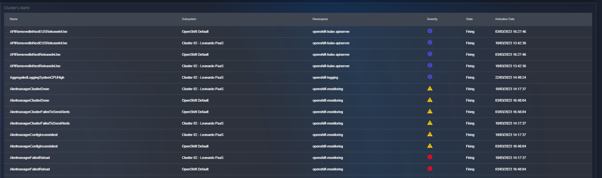
Cliccando su una riga della tabella si aprirà una finestra di dettaglio, dove è possibile trovare tutte le informazioni relative all’“alert” selezionata.
Per uscire dal dettaglio, occorre cliccare fuori dalla finestra, che si chiuderà automaticamente.
Dashboard Compliance
Per visualizzare la dashboard compliance, cliccare sulla tab che raffigura un documento nel modulo sicurezza.
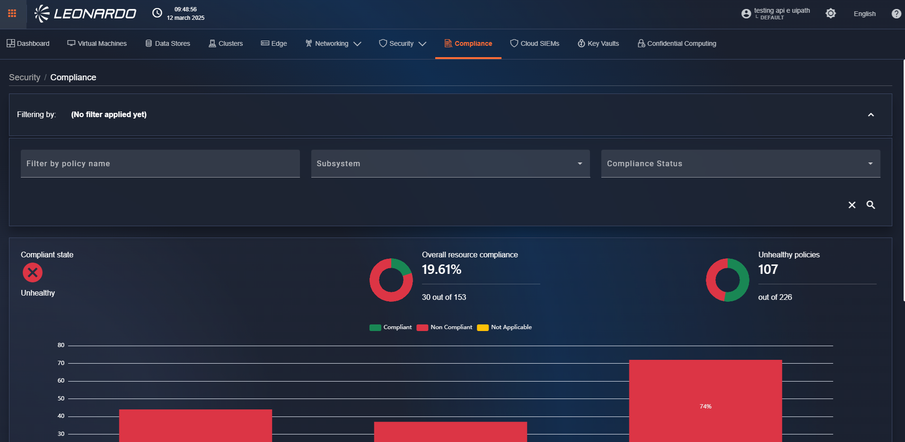
A questo punto, l’utente si trova nella pagina tab “Compliance”, composta da 4 sezioni. La prima sezione contiene i filtri che permettono la ricerca per nome policy, sottosistema e/o stato di compliance. La seconda sezione, sempre attiva, contiene i grafici a torta che indicano lo stato generale delle risorse filtrate.
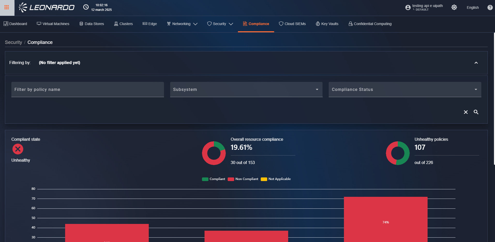
La terza sezione, attiva solo se nei risultati sono presenti più sottosistemi diversi, mostra un grafico a barre, suddiviso per provider, dello stato di compliance delle risorse. L’ultima sezione contiene una tabella con le informazioni generali sui gruppi di policy.
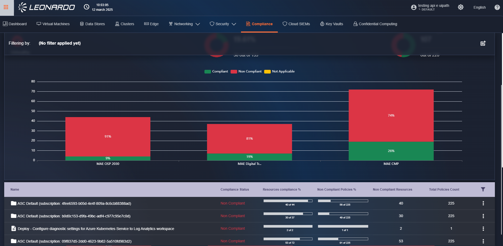
Cliccando su una riga della tabella si apre una modale dove sarà possibile visualizzare l’elenco di tutte le policy configurate nel gruppo, con il relativo conteggio delle risorse. Sempre all’interno della modale, possiamo cliccare su una delle policy visualizzate; così facendo verrà mostrato in basso l’elenco di tutte le macchine assegnate alla policy e il relativo stato. Accanto a ciascuna risorsa è disponibile un pulsante “link”; una volta cliccato, l’utente verrà reindirizzato alla pagina inventario della risorsa selezionata.